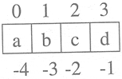

| < BACK | Make Note | Bookmark | CONTINUE > |
Strings and Operators
Standard Type Operators
In Chapter 4, we introduced a number of operators that apply to most objects, including the standard types. We will take a look at how some of those apply to strings. For a brief introduction, here are a few examples using strings:
>>> str1 = 'abc' >>> str2 = 'lmn' >>> str3 = 'xyz' >>> str1 < str2 1 >>> str2 != str3 1 >>> (str1 < str3) and (str2 == 'xyz') 0
When using the value comparison operators, strings are compared lexicographically (ASCII value order).
Sequence Operators
Slices ([ ] and [ : ])
Earlier in Section 6.1.1, we examined how we can access individual or a group of elements from a sequence. We will apply that knowledge to strings in this section. In particular, we will look at:
Counting forward
Counting backward
Default/missing indexes
For the following examples, we use the single string 'abcd'. Provided in the figure is a list of positive and negative indexes that indicate the position in which each character is located within the string itself.

Using the length operator, we can confirm that its length is 4:
>>> string = 'abcd' >>> len(string) 4
When counting forward, indexes start at 0 to the left and end at one less than the length of the string (because we started from zero). In our example, the final index of our string is
final index = len(string) - 1
= 4 - 1
= 3
We can access any substring within this range. The slice operator with a single argument will give us a single character, and the slice operator with a range, i.e., using a colon (:), will give us multiple consecutive characters. Again, for any ranges [start:end], we will get all characters starting at offset start up to, but not including, the character at end. In other words, for all characters x in the range [start : end], start<= x < end.
>>> string[0] 'a' >>> string[1:3] 'bc' >>> string[2:4] 'cd' >>> string[4] Traceback (innermost last): File "<stdin>", line 1, in ? IndexError: string index out of range
Any index outside our valid index range (in our example, 0 to 3) results in an error. Above, our access of string[2:4] was valid because that returns characters at indexes 2 and 3, i.e., 'c' and 'd', but a direct access to the character at index 4 was invalid.
When counting backward, we start at index -1 and move toward the beginning of the string, ending at negative value of the length of the string. The final index (the first character) is located at:
final index = -len(string)
= -4
>>> string[-1]
'd'
>>> string[-3:-1]
'bc'
>>> string[-4]
'a'
When either a starting or an ending index is missing, they default to the beginning or end of the string, respectively.
>>> string[2:] 'cd' >>> string[1:] 'bcd' >>> string[:-1] 'abc' >>> string[:] 'abcd'
Notice how the omission of both indices gives us a copy of the entire string.
Membership (in, not in)
The membership question asks whether a character (string of length one) appears in a string. A one is returned if that character appears in the string and zero otherwise. Note that the membership operation is not used to determine if a substring is within a string. Such functionality can be accomplished by using the string methods or string module functions find() or index() (and their brethren rfind() and rindex()).
Here are a few more examples of strings and the membership operators.
>>> 'c' in 'abcd' 1 >>> 'n' in 'abcd' 0 >>> 'n' not in 'abcd' 1
In Example 6-1, we will be using the following predefined strings found in the string module:
>>> import string >>> string.uppercase 'ABCDEFGHIJKLMNOPQRSTUVWXYZ' >>> string.lowercase 'abcdefghijklmnopqrstuvwxyz' >>> string.letters 'abcdefghijklmnopqrstuvwxyzABCDEFGHIJKLMNOPQRSTUVWXYZ' >>> string.digits '0123456789'
Example 6-1 is a small script called idcheck.py which checks for valid Python identifiers. As we now know, Python identifiers must start with an alphabetic character. Any succeeding characters may be alphanumeric. The example also shows use of the string concatenation operator ( + ) introduced later in this section.
Running this script several times produces the following output:
% python idcheck.py Welcome to the Identifier Checker v1.0 Testees must be at least 2 chars long. Identifier to test? counter okay as an identifier % % python idcheck.py Welcome to the Identifier Checker v1.0 Testees must be at least 2 chars long. Identifier to test? 3d_effects invalid: first symbol must be alphabetic
Let us take apart the application line by line:
Lines 3–6
Import the string module and use some of the predefined strings to put together valid alphabetic and numeric identifier strings which we will test against.
Example 6.1. ID Check (idcheck.py)
Tests for identifier validity. First symbol must be alphabetic and remaining symbols must be alphanumeric. This tester program only checks identifiers which are at least two characters in length.
<$nopage>
001 1 #!usr/bin/env python
002 2
003 3 import string
004 4
005 5 alphas = string.letters + '_'
006 6 nums = string.digits
007 7
008 8 print 'Welcome to the Identifier Checker v1.0'
009 9 print 'Testees must be at least 2 chars long.'
010 10 inp = raw_input('Identifier to test? ')
011 11
012 12 if len(inp) > 1:
013 13
014 14 if inp[0] not in alphas:
015 15 print '''invalid: first symbol must be
016 16 alphabetic'''
017 17 else: <$nopage>
018 18 for otherChar in inp[1:]:
019 19
020 20 if otherChar not in alphas + nums:
021 21 print '''invalid: remaining
022 22 symbols must be alphanumeric'''
023 23 break <$nopage>
024 24 else: <$nopage>
025 25 print "okay as an identifier"
026 <$nopage>
Lines 8–12
Print the salutation and prompt for user input. The if statement on line twelve filters out all statements shorter than two characters in length.
Lines 14–16
Check to see if the first symbol is alphabetic. If it is not, display the output indicating the result and perform no further processing.
Lines 17–18
Otherwise, loop to check the other characters, starting from the second symbol to the end of the string.
Lines 20–23
Check to see if each remaining symbol is alphanumeric. Note how we use the concatenation operator (see below) to create the set of valid characters. As soon as we find an invalid character, display the result and perform no further pocessing by exiting the loop with break.
NOTE
In general, repeat performances of operations or functions as arguments in a loop are unproductive as far as performance is concerned.
while i < len(string): print 'character %d is:', string[i]
The loop above wastes valuable time recalculating the length of string string. This function call occurs for each loop iteration. If we simply save this value once, we can rewrite our loop so that it is more productive.
length = len(string) while i < length: print 'character %d is:', string[i]
The same applies for a loop in the application in Example 6-1.
for otherChar in input[1:]:
if otherChar not in alphas + nums:
:
The for loop beginning on line 19 contains an if statement that concatenates a pair of strings. These strings do not change throughout the course of the application, yet this calculation must be performed for each loop iteration. If we save the new string first, we can then reference that string rather than make the same calculations over and over again:
alphnums = alphas + nums
for otherChar in input[1:]:
if otherChar not in alphnums:
:
Lines 24–25
It may be somewhat premature to show you a for-else loop statement, but we are going to give it a shot anyway. (For a full treatment, see Chapter 8). The else statement, for a for loop is optional and, if provided, will execute if the loop finished in completion without being "broken" out of by break. In our application, if all remaining symbols check out okay, then we have a valid identifier name. The result is displayed to indicate as such, completing execution.
This application is not without its flaws however. One problem is that the identifiers tested must have length greater than 1. Our application as-is is not reflective of the true range of Python identifiers, which may be of length 1. Another problem with our application is that it does not take into consideration Python keywords, which are reserved names which cannot be used for identifiers. We leave these two tasks as exercises for the reader (see Exercise 6-2.).
Concatenation (+)
We can use the concatenation operator to create new strings from existing ones. We have already seen the concatenation operator in action above in Example 6-1. Here are a few more examples:
>>> 'Spanish' + 'Inquisition' 'SpanishInquisition' >>> >>> 'Spanish' + ' ' + 'Inquisition' 'Spanish Inquisition' >>> >>> s = 'Spanish' + ' ' + 'Inquisition' + ' Made Easy' >>> s Spanish Inquisition Made Easy' >>> >>> import string >>> string.upper(s[:3] + s[20]) 'SPAM'
The last example illustrates using the concatenation operator to put together a pair of slices from string s, the "Spa" from "Spanish" and the "M" from "Made." The extracted slices are concatenated and then sent to the string.upper() function to convert the new string to all uppercase letters.
Repetition (*)
The repetition operator creates new strings, concatenating multiple copies of the same string to accomplish its functionality:
>>> 'Ni!' * 3 'Ni!Ni!Ni!' >>> >>> '*'*40' '****************************************' >>> >>> print '-' * 20, 'Hello World!', '-' * 20 -------------------- Hello World! -------------------- >>> who = 'knights' >>> who * 2 'knightsknights' >>> who 'knights'
As with any standard operator, the original variable is unmodified, as indicated in the final examples above.
| Last updated on 9/14/2001 Core Python Programming, © 2002 Prentice Hall PTR |
| < BACK | Make Note | Bookmark | CONTINUE > |